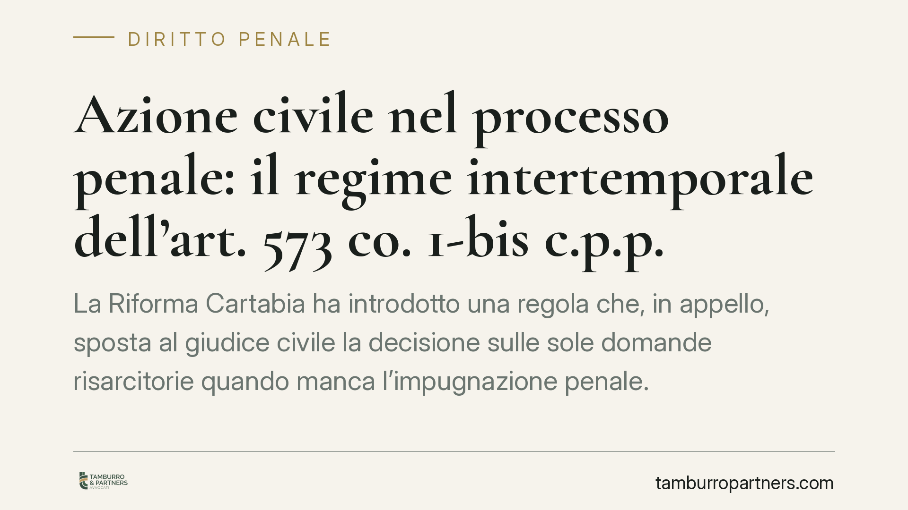

Azione civile nel processo penale: il regime intertemporale dell'art. 573 co. 1-bis c.p.p.
La Riforma Cartabia ha introdotto una regola che, in appello, sposta al giudice civile la decisione sulle sole domande risarcitorie quando manca l'impugnazione penale. Restava aperta la questione del diritto transitorio: da quando si applica? Le Sezioni Unite hanno fissato un criterio temporale. Ricostruiamo il quadro distinguendo ciò che dice la legge da ciò che ha chiarito la giurisprudenza.

Il fatto e la questione
Con il decreto legislativo n. 150 del 2022 (Riforma Cartabia) è stato inserito il comma 1-bis nell'articolo 573 del codice di procedura penale. La norma prevede che, quando la sentenza penale è impugnata per i soli interessi civili, il giudice dell'impugnazione, se conferma la sussistenza del reato ai fini civili o se l'appello riguarda unicamente le statuizioni civili, rinvia la decisione al giudice civile competente per valore in grado di appello.
In concreto: l'appello che tocca solo il risarcimento del danno esce dal binario penale e passa al giudice civile. La regola ha sollevato un problema di diritto intertemporale, cioè da quale momento processuale scatta l'applicazione della nuova disciplina.
Inquadramento normativo
Occorre tenere distinti due piani.
Il primo è la ratio legislativa. L'art. 573 co. 1-bis c.p.p. nasce per alleggerire il giudice penale d'appello dalle controversie meramente risarcitorie, riportandole nella loro sede naturale, il processo civile, quando non vi è più un interesse penalistico in gioco.
Il secondo è la ratio giurisprudenziale. Sul regime transitorio è intervenuta la Corte di Cassazione a Sezioni Unite con la sentenza n. 38481 del 2023. Il principio affermato àncora l'applicazione della nuova norma al momento in cui l'impugnazione per i soli interessi civili viene proposta: la disciplina opera, in sostanza, in relazione al momento processuale dell'impugnazione, non retroagendo sui giudizi la cui fase di gravame si era già radicata secondo il regime previgente.
È un punto delicato. La linea di confine non va identificata semplicisticamente con la data di costituzione della parte civile: il criterio rilevante attiene alla fase dell'impugnazione. Chi tratta cause in corso deve verificare la pronuncia integrale e le sue massime, perché il tema è stato oggetto di contrasto prima dell'intervento nomofilattico.
Implicazioni pratiche
Il passaggio dal rito penale a quello civile in appello non è neutro. Cambiano più cose.
Termini e forma dell'atto. L'appello penale e l'appello civile hanno requisiti di forma e termini propri. Nel passaggio occorre presidiare la corretta instaurazione della fase civile, evitando decadenze.
Oneri probatori. Nel giudizio civile la parte danneggiata sostiene l'onere della prova secondo le regole civilistiche, senza l'accertamento penale a monte. Muta l'impostazione difensiva.
Spese di lite. Il regime delle spese nel processo civile segue il principio della soccombenza, con esposizione economica diversa rispetto al giudizio penale. Va valutata con attenzione la convenienza dell'impugnazione sui soli interessi civili.
Tempi. Il trasferimento comporta il radicamento di un nuovo grado davanti a un ufficio diverso, con i tempi propri del contenzioso civile.
Per l'imputato-danneggiante, il fronte del contenzioso risarcitorio si sposta e con esso la strategia difensiva. Per la parte civile, la scelta di impugnare solo per gli interessi civili va calibrata sugli oneri del rito civile.
Perché conta la corretta collocazione temporale
Stabilire se un giudizio ricada sotto il vecchio o il nuovo regime incide sull'individuazione del giudice competente e sulla validità degli atti di impugnazione. Un errore su questo profilo può tradursi in un'impugnazione proposta nella sede sbagliata, con conseguenze processuali serie. Per questo la verifica del momento rilevante, alla luce del principio delle Sezioni Unite, è preliminare a ogni scelta.
Cosa fare in concreto
- Verifica la fase processuale rilevante. Individua con precisione il momento in cui è stata o sarà proposta l'impugnazione per i soli interessi civili e confrontalo con l'entrata in vigore della Riforma Cartabia.
- Consulta la sentenza integrale delle Sezioni Unite n. 38481/2023. Le massime sintetiche non bastano su un tema di diritto transitorio: leggi la motivazione.
- Controlla forma e termini dell'atto di impugnazione in funzione della sede, penale o civile, davanti alla quale il gravame va radicato.
- Valuta gli oneri economici e probatori del giudizio civile prima di decidere se impugnare per i soli interessi civili.
- Documenta ogni passaggio relativo alla competenza e al radicamento del giudizio, per prevenire eccezioni di inammissibilità o incompetenza.
È opportuno anticipare questa verifica alla prima fase del contenzioso, quando le scelte processuali sono ancora aperte.
Disclaimer
Contributo informativo a cura di Tamburro & Partners - Avv. Giuseppe Tamburro. Non costituisce parere legale.
Ogni condominio ha una storia a sé.
Se gestisci un'amministrazione e vuoi un confronto su una specifica questione condominiale, scrivi allo studio. Ti rispondiamo entro un giorno lavorativo.